|
|
|
З.О.Ж. на Мамае
( 18 - 19 ноября 2006 ) Бросив курить, пить и общаться с женщинами, два Алексея двинули в поисках здорового образа жизни в колыбель прибайкальского фрирайда - на Мамай. Однако последний пункт не получилось выполнить уже в пути - на какой-то станции в вагоне электрички появились известная байкальская сноубордистка Аня и две незнакомые представительницы Ангарска и Иркутска. Марина и Катя впервые ехали на Мамай, дорогу знали понаслышке, плюс у них были огромные рюкзаки и проблемы с газовым оборудованием. Два Алексея подумали и решили, что не замерзать же столь храбрым сноубордисткам одним в палатках, или что еще хуже - впасть в нездоровый образ жизни где-то в районе кунга. А потому компания из пяти доскеров и одной кастрюли десантировалась на остановке Мамай и бодро зашагала в зимуху. После быстро организаванного обеда в гостеприимном зимовье, переодеваемся в спортивную форму и устраиваем забег на Лесной Пупырь. Забег осложнялся повышенной солнечной активностью и небольшой тропежкой по старой тропе, покрытой по 20 см снега, и чем выше тем больше. Однако при содействии Мяктова со "товарисчем" передовая группа пробилась на вершину пупыря за 2 часа. 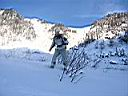 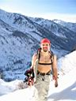 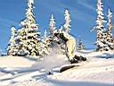 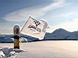 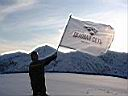 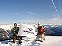 На вершине Лесного Пупыря группой Александра Мяктова была найдена долгожданная ледяная свежесть (Айс? Айс!!!), потому как после жаркого тропильного подъема на вершине народ встречал нехилый морозный ветер. Надо сказать, что тема "АЙС" пришлась всем по вкусу и была максимально поддержана среди участников катания :) В тяжелейших погодных условиях была проведена рекламная акция для спонсора льготного доступа в интернет ОАО "Деловая Сеть Иркутск". Оставив флаг на вершине для всеобщего обозрения, адепты здорового образа жизни покатили вниз за дозой адреналина. А катуха была отменная! Мать-природа подготовила склоны, уплотнив на них снег, и доски почти не тонули, и сноубордисты не изображали прыгающих лягушат на пологих участках :) Сноубордисты изображали крутых райдеров, прыгали на кочках и с камней, осваивали новые трюки (типа front flip on snow с приземлением downhead :) Новомамайки Марина и Катя под чутким руководством Ани, видавшей виды Лесного пупыря, сделали первый спуск с вершины до ручья и далее к лагерю. А два Алексея и Макс, в третий раз за день поднявись на Лесной, покатили на западный склон открывать для себя новый маршрут. Начавшись широким полем, маршрут заканчивался узким кулуаром, где пришлось на полную катушку маневрировать между кустов и камней. Благополучно доехав в полном составе до сноубордического лагеря возле кунга, довольные собой попили чаю с местным населением и покатили к зимухе. Вода ходит из речки, дрова разгораются в печке, ужин варится, свечка нагнетает романтическую обстановку. На ужин женское население приготовило сосиски с гречкой, порезало сало и развело спирт, а потому мужскому населению пришлось нарушить и вторую заповедь здорового образа жизни :) Вечер прошел в общении на туристическо-катальные темы, рассказывании анекдотов и загадок, нахождении общих знакомых и т.д. и т.п. А рано утром пошел снег и сноубордисты. Потому как на Мамае долго спать нельзя, а то все раскатают :) Два Алексей решили сегодня не ходить в цирк Мамая, потому как туда еще надо тропить, видимость ухудшилась, цеплючие кусты еще не засыпало. На Лесном видимость в низких облаках тоже не фонтан, однако туда затроплено, и покататься еще есть где. Ну и покатались себе на удивление - сделали три спуска! Время еще и на четвертый оставалось, только уж очень кушать хочецца :) А девченки в это время раскатали в хлам Учебку и где-то еще покатались на сколько здоровья и времени хватило. А времени у нас хватило и на плотный обед, и на сборы, и на катуху вниз по тропе, и к бабе Ире зайти за кипяточком, и пирожки купить в соседнем доме (новая услуга на тарифном плане "Мамай" :) Народу на электричке катались только мы, "буржуи" на машинах заезжали-уезжали, снег на равнине закрыл грязь дороги, однако проехать можно даже на легковых. На вокзале в Слюдянке видели пару доскеров - катались в Байкальске, две трассы уже открыли. Вот такой он, здоровый образ жизни на Мамае :) Жалко, что Вовы Языка не было, а то бы и мы первую заповедь нарушили :)
PS от автора : половина фото сделаны сотовым телефоном, потому как замерзшие аккумуляторы фотоаппарата были израсходованы на фотосессию рекламной акции для спонсора "Деловая Сеть Иркутск" (прошу особо учесть :) PS от Кати : ... очень неожиданно... Всмысле ВСЕ! Наши сборы (куда-то покататься), встреча с Аней в Байкальске, вы в электричке, зимовье...ну, и сам МАМАЙ, и теперь сайт и история...все! Это было...АЙС!!! Thank you so much, guys... А когда будете выполнять пункт №1, то у меня есть супе-капли для глаз...Визин называются...:) PS от Leen : Ээх! жалко, что фотки маленького размеру! Красота! Молодцы! PS от Языка : PS от Xslide : Привет) Спасибо за ссылку на форуме ангары на этот сайт. Прям он-лайн ежедневник мамая. Когда след раз на Мамай? PSS от автора : заходил на сайт Трифонова Александра ( Xslide - известные ангарский экстримал: ньюскулер, роллер и не только ). Был приятно удивлен уровнем фото, причем не только Х-тема, но и пейзажи, и портреты. Молодец, Саша! Успехов!
Ноябрь 2006. Белокрылов Алексей. Слюдянка. |
В поисках ледяной свежести: 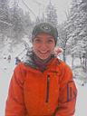 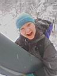 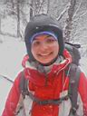 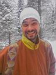
Несколько фото от Трифонова Александра, который был в эти выходные где-то рядом :) 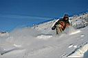 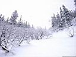 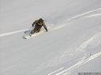 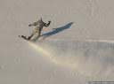
|